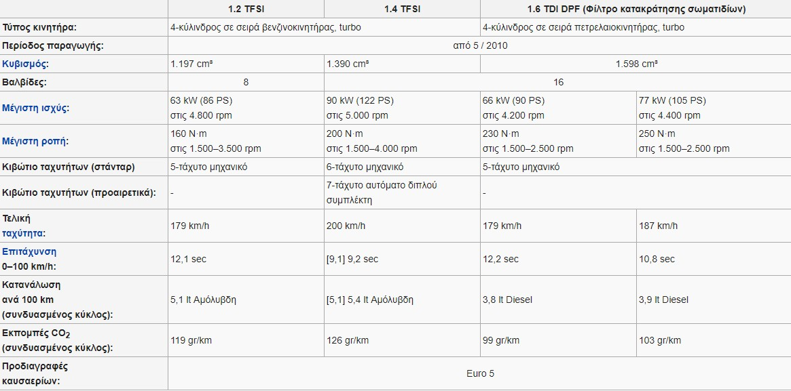

Audi A1 - Μπιζουδάκι
Το αγαπημένο μου αυτοκίνητο είναι τo μπιζουδάκι μου, Audi A1, το οποίο είναι ένα αυτοκίνητο πόλης Β κατηγορίας. Παρουσιάστηκε στην έκθεση αυτοκινήτων της Γενεύης τον Μάρτιο του 2010 και η παραγωγή του ξεκίνησε τον Μάιο. Από τον Ιούνιο του 2018 άρχισε να παράγεται και η δεύτερη γενιά του.
Κυκλοφόρησε στην αγορά της Γερμανίας τον Αύγουστο του 2010 και μέσα στους πρώτους μήνες κυκλοφόρησε και στις υπόλοιπες αγορές, ενώ ειδικά στο Ηνωμένο Βασίλειο ως δεξιοτίμονο κυκλοφόρησε τον Νοέμβριο του 2010. Αρχικά προσφέρθηκε αποκλειστικά σε 3-πορτη hatchback έκδοση, ενώ μέσα στο 2011 λανσαρίστηκε και μια 5-πορτη hatchback έκδοση, με την ονομασία Sportback.
Η έκδοση Audi A1 1.4 TFSI Sport κέρδισε το βραβείο του Αυτοκινήτου της Χρονιάς (Car of the Year) του βρετανικού περιοδικού «What Car?» για το 2011.
